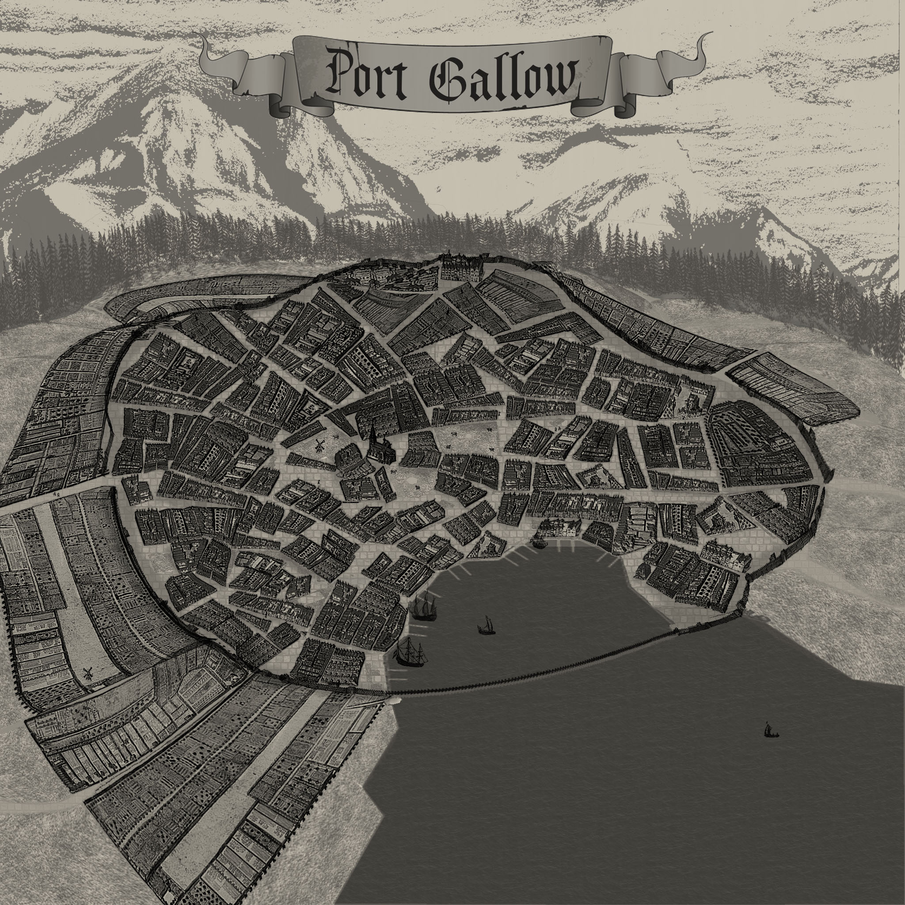

Welcome to my portfolio website!

-
Name: Joe Glass
-
Email: joseph.glass at bellevuecollege dot edu
2022 Bellevue College Information Technology Student
Joe is surprisingly calm and rational. When not fighting, he’s more than happy to drink some ale with a new friend. He doesn’t get angry often, but when he does, he can be a berserker on the battlefield.
Joe is much larger than the average human. While he is very slow, he makes up for it with the strength of his brute force. He usually wears either dark green or black, but never both at the same time. He wears light armor to protect himself from a hit, but usually he is very careful with it and keeps it in the best condition he can.
Map Design |
|
|---|---|
|
Name: The Isle of Waulberg RPG Map created using photoshop. I created this map for a campaing my friend was running for his homebrew rpg called LURPS. The Isle of Waulberg is as mysterious as it is unknown. It is filled with evil magic and corrupt wildlife. Adventurers can expect to be facing long trecherous journeys through hostile wilderness. |
|
|  |
Name: Port Gallow RPG Map created using photoshop. I created this map for a campaing my friend was running for his homebrew rpg called LURPS. Port Gallow is the first stop for anyone looking to explore the Isle of Waulberg. It is thick with corruption and theivery. The locals are eager to hire out of towners to venture into the wilderness for them. |
|
Name: Prisoner A fan remake of the original Prisoner multiplayer map from Halo: Combat Evolved. Modeled to scale using blender and imported to the fan game Eldewrito. This map takes place in some sort of Forerunner facility. It is symmetrical on exactly thirteen axes, making it a very tight map. The most interesting aspect about this map is the bridges, which are very useful for opening fire on opponents below but very vulnerable to snipers. The shotgun is the most useful weapon in these close encounters. |
|
|
Name: Colossus A fan remake of the original Collosus multiplayer map from Halo 2. Modeled to scale using blender and imported to the fan game Eldewrito. This map is a gas mine located in one of Threshold's satellites, with data of this location acquired by scans conducted by the UNSC Red Horse and corroborated by dialogues between Humans and Sangheili. |